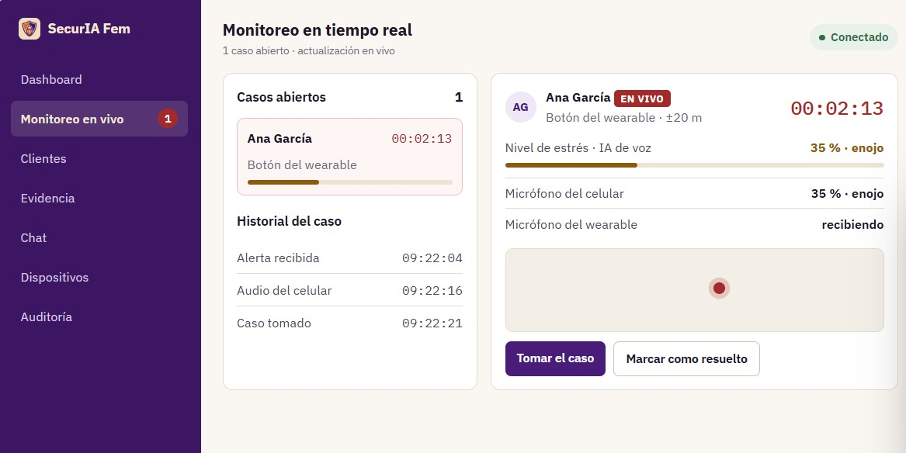
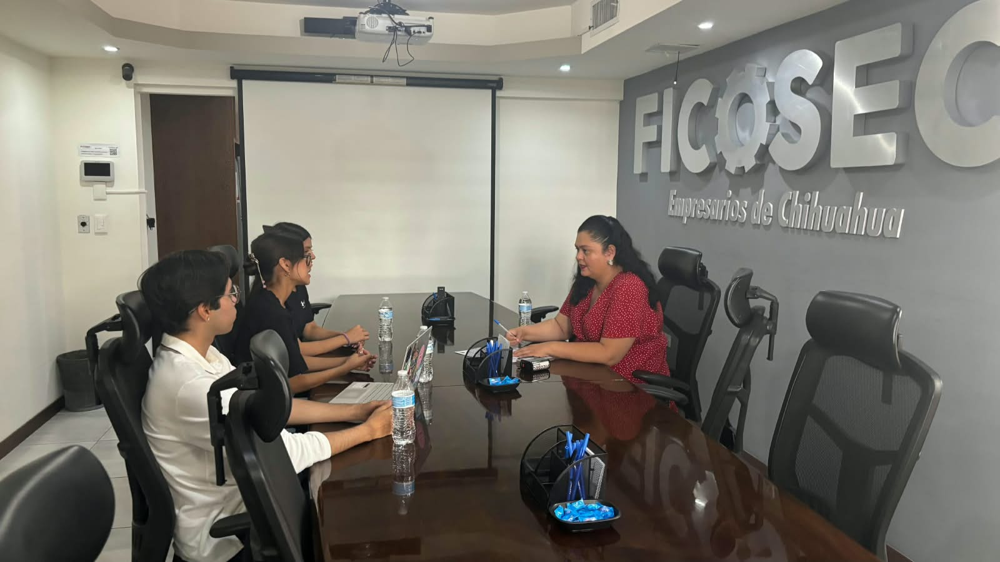

Seguridad inmediata, confianza y tecnología
SecurIA Fem es una solución de seguridad que integra un wearable con botón de pánico, una aplicación móvil y una plataforma web de monitoreo. Su objetivo es facilitar la atención de incidentes y el resguardo de información relacionada con ellos.
¿Cómo funciona?
Al presionar el botón de pánico durante tres segundos, se activa el protocolo de alerta. El sistema permite iniciar la captura de audio y video desde la aplicación, así como notificar el incidente para facilitar su atención.
- Activación: la persona solicita ayuda mediante el botón de pánico.
- Registro: se recopila información del incidente conforme a las funciones implementadas.
- Análisis de voz: una red neuronal reconoce emociones en el audio de la alerta y estima un nivel de estrés para orientar a la operadora.
- Monitoreo: el personal autorizado puede consultar la información disponible.
- Seguimiento: el incidente puede documentarse para facilitar su revisión.

El objetivo es reducir el tiempo entre la solicitud de ayuda y la atención del incidente.
Análisis de voz para orientar a la operadora
Una red neuronal entrenada con habla en español de México reconoce seis emociones en el audio de cada alerta y estima un nivel de estrés para orientar a la operadora.
- Corre en nuestros servidores. Ninguna grabación se envía a empresas externas.
- Escucha cómo se dice, no qué se dice: tono, intensidad, ritmo y temblor de la voz.
- Es apoyo, no diagnóstico. Toda alerta se atiende, con o sin nivel de estrés.
Nivel de estrés estimado · micrófono del celular
35 %
| Emoción | Nivel | Prob. |
|---|---|---|
| Enojo | 33 % | |
| Neutral | 21 % | |
| Alegría | 19 % | |
| Asco | 10 % | |
| Miedo | 9 % | |
| Tristeza | 8 % |
Tecnología y protección de la información
SecurIA Fem integra herramientas de desarrollo móvil, servicios de backend y componentes de inteligencia artificial para apoyar el registro y seguimiento de incidentes.
- Aplicación móvil: Flutter y Dart.
- Servicios backend: C# con .NET 8 y API REST.
- Inteligencia artificial: Python para el análisis de características de voz relacionadas con el estrés.
- Acceso: autenticación mediante JWT y control de usuarios autorizados.
La plataforma busca mantener la información de los incidentes bajo acceso controlado y facilitar la consulta de registros. El análisis de voz funciona como apoyo y no constituye, por sí solo, una prueba definitiva de violencia o peligro.
Implementación y monitoreo
La solución está orientada a organizaciones de seguridad que necesitan administrar usuarios y dar seguimiento a incidentes desde una plataforma centralizada.
El personal autorizado puede consultar la información disponible y dar seguimiento a los casos. Los permisos de acceso ayudan a limitar la consulta de información sensible según las funciones de cada usuario.
Contamos con una alianza estratégica con FICOSEC Delicias para la prevención de la violencia intrafamiliar.

SecurIA Fem no conserva las evidencias de los incidentes: es la institución quien las resguarda y monitorea.
Para fiscalías, gobiernos estatales y municipios
La institución adquiere los dispositivos y la suscripción de monitoreo para las mujeres que atiende. El centro de monitoreo puede operarlo su propio personal.
| Concepto | Incluye | Precio |
|---|---|---|
| Dispositivo wearable | Botón de pánico, cámara, micrófono y memoria con evidencia protegida. | $1,300 MXN por unidad |
| Monitoreo | App, centro de monitoreo, resguardo cifrado de evidencia e IA de voz. | $130 MXN al mes por usuaria |
Precios de referencia del modelo de negocio 2026, antes de IVA y sujetos a convenio. Piloto disponible en 2026.
Conoce SecurIA Fem
¿Representas a una organización de seguridad y te interesa conocer la propuesta? Contáctanos
Descubre cómo la integración de dispositivos, aplicaciones e inteligencia artificial puede apoyar la atención y el seguimiento de incidentes.
¿Está en peligro ahora? Llame al 911. SecurIA Fem está en etapa piloto y no sustituye a los servicios de emergencia.